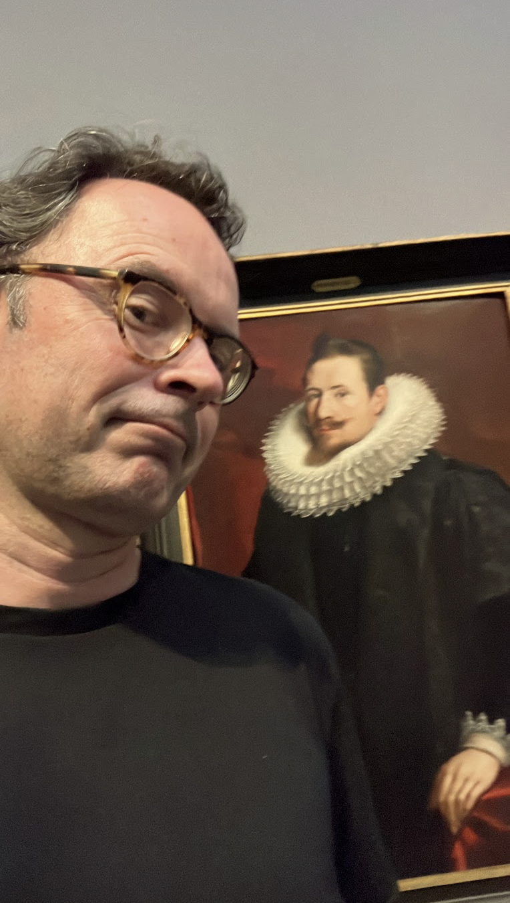

ABOUT

I’m a social scientist by training but I never practiced social science until I started painting. Painting is my method of enquiry into contemporary social and environmental tension.
Our time is a time of rapid technological acceleration and political unrest. In art history, 19th Century Romanticism responded to a comparable time, the first industrial revolution. Romanticism idealised untouched wilderness and an awe for the sublime, which is fundamentally about feeling overwhelmed by forces far greater than humanity. Our 21st Century experience is shaped by fear for a digital dystopia, ecological tipping points and populism. It feels instinctive to urge again for idealised nature, emotional intensity and the sublime in this heavy context, but we live in an era where untouched nature no longer exists.
My contemporary landscapes therefore have to be a construction of nature that is no longer untouched. I sculpt them in layers of impasto. I can scrape things back but the process is mostly irreversible, the past shows through in the present. I combine spray paint and acrylic paint with traditional oil painting techniques to achieve a contemporary unsettling effect. I make use of dramatic chiaroscuro lighting that could be artificial. My colour choices and lighting could result from light pollution, wildfires or chemicals. The unsettling tension of our disrupted ecological and social environment balances my paintings between beauty and combustion.
Rather than longing for a lost past, my landscapes question whether our environment is something humans can indefinitely control and exploit. I have a preference for working on a large scale so that the tactile, layered surfaces interact directly with the viewer’s physical space. In contrast to the contemporary standard of how images are consumed, I deliberately craft works whose material presence can only be fully experienced in person.
NOTES.CFG
EDIT FREELYMAILING_LIST.SUB
JOINLeave your name and email to hear about new paintings and shows.